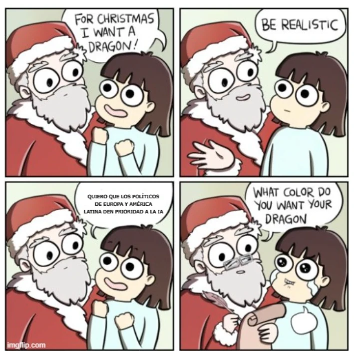

estrategIA #39 ·
Una petición difícil para Papá Noel
El contexto
Pedir un dragón parece menos ambicioso que conseguir prioridad política para la IA. La viñeta mezcla inglés y español para acompañar el balance de junio de 2024, que contrastaba la aceleración empresarial con la respuesta del sector público.
Publicado en: estrategIA #39: Balance de los primeros seis meses de 2024: el sector privado en IA acelera fuertemente y el público apenas arranca
Leer el texto de la imagen
FOR CHRISTMAS I WANT A DRAGON! BE REALISTIC QUIERO QUE LOS POLÍTICOS DE EUROPA Y AMÉRICA LATINA DEN PRIORIDAD A LA IA WHAT COLOR DO YOU WANT YOUR DRAGON
Marca de la herramienta visible en el original: imgflip.com.